| Match Report - 28 May 2011 |
|
|
|
|
|
|
|
|
U6 Green
7 - 2
|
|
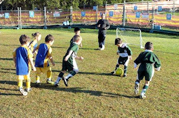
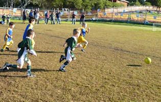
The U6 Green team faced this week's match with excitement and determination at
their home ground. The game opened with even matched players and the U6 Green
team were attacking relentlessly to score the breakthrough from Christian early
with a big high five to his Dad (Neil) who was coaching. This was followed by a
couple of goals from Blake who's smile tells the story and another from Jasmine
who has now mastered her celebration dance back to the half way (a definite
crowd pleaser).
The second half sore the Ryde Saints United team score 2 goals and control a
lot more of the play. However Christian, Jasmine and Elijah secured the victory
with a goal each. Elijah pulled off an amazing goal with a slide kick from the
backline on such an angle straight into the net. The game was fast paced and
great for all to watch. The undefeated run continues - Well done everyone your
team spirit and sportsmanship is inspiring.
The player of the week this week was awarded to William for trying his hardest
and improved ball skills.
- Sarah Robson
|
|
|
|
U6 Purple A
4 - 3
|
|
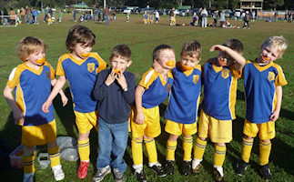
It was another beautiful day and the boys were once again keen and excited to
play. Lachlan cheered from the side under doctors orders but will no doubt be
back on the field next week.
Our most evenly matched game yet, the boys managed a win this week with a little
help from the other team!
It was very even possession of the ball right from the start and looking like
a nil all draw coming on until Ethan scored the first goal about 10 minutes in
to the first half. The opposition never relaxed and Luke, Alex, Liam & Cameron
were excellent on defense, saving many a goal - although one slipped through
before half time.
The oranges again were very popular and helped the boys maintain their enthusiasm
for most of the second half with Eli scoring two goals bringing the final score
to 4 - 3 in our favour. There were some near goals by Luke & Cameron as well,
just missed!
Thanks Rich (Cameron's Dad) for stepping in to ref and assist with the coaching
since Coach Tim was nursing his own injury.
Player of the week went to Ethan for his persistence, enthusiasm and great goal
today.
- Nerradene Wolken
|
|
|
|
U6 White C
3 - 3
|
|
With the sun shining we played Saints United and drew 3 all. Both teams had a
great game! Unfortunately Kurt was not well enough to play but Dad bought along
the fruit and trophy for support!
The boys and there band of enthusiastic supporters had a fantastic morning!
- Lisa Mach
|
|
|
|
U7 White B
|
|
A great game by the girls and boys. The whole team played really well and
everyone played a pivotal role in setting up the goals scored by Brandon and
Luca. It was impressive to see how well the them is passing the ball to each
other. The defending was great and quite a few goals were saved. Congratulations
to Niyel, who was this week's Player of the Match.
- Michael
|
|
|
|
U7 White C
7 - 1
|
|
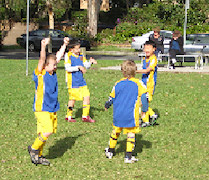
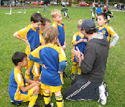
The team had a win today against the Macquarie Dragons (7-1). The game was played
at a great pace; probably a result of the very chilly autumn morning! The boys
kept up the attack during most of the game, with goals coming at regular
intervals.
It's great to see the boy's game coming together - we are starting to see the
boys 'looking and passing' to each other, cross field passing (still getting the
occasional cross goal pass), and strong tackling!
The improvement in their game has resulted in more boys scoring - 7 goals in this
game spread across 6 of the boys - Well Done!
Looking forward to next week!
- Michael Costello
|
|
|
|
U8 Brown
7 - 0
|
|
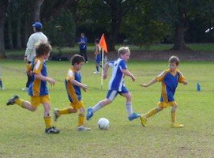
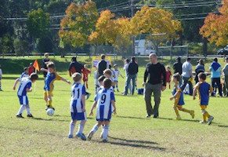
After a few weeks where the team were finding their boots again, it all seemed
to come together on Saturday at Ruddock Oval. In celebration of our Goalie coach
- Mark's birthday (Brooklyn's dad), the team hit the ground running on this
picturesque morning. Issak started off in goals and although he didn't have a lot
of action come his way as our team governed the play for the entire first half.
Declan scored a very convincing goal to take us in the lead and with so many
of the teams family on the sidelines the team just sprang into action. Sam scored
a great hat trick today as well as a goal from Ben, Isaak and Luca. Oliver, Jake
and Brooklyn made some fantastic shots at goal and the fast hands of the Beecroft
goalie saved them. Jake was goalie for the second half and made several brilliant
saves as well as excellent goalie kicks to get the ball back down into our attack.
Thanks to John for coaching and umpiring today. Liam was strong in the midfield
and is mastering the throw inn's from the sideline. The spirits were high and the
kids walked off the field a foot taller as they all had tried their best and
everything seemed to come together with passing and ball control. The positional
play is improving and when we use free space we are having a lot of success.
The player of the week was awarded to Ben for his strength and determination on
the field. Ben made some great tackles and runs down the field as well as an
excellent goal.
- Sarah Robson
|
|
|
|
U8 Yellow
4 - 1
|
|
Round seven, Game 6. An 'away' game this week with the team travelling out to
West Epping. A sunny, but cool day with the temperature already at a brisk 6.5
degrees celsius. Fortunately, there is no wind to contend with making it a very
pleasant start to the day. The team get set up and commence pre game practice.
Kate will be defending the goal for the first half. Using the warm up period,
the team helps her get accustomed to the role. She does a sterling job, during
both this session and the first half.
0827 and play gets underway. Epping YMCA are running North to South and have a
slight advantage with the sun at their backs. The game progresses for the next
fifteen minutes, with both sides playing a good tight game - very entertaining.
North Ryde, appeared to be somewhat sluggish, with only a half dozen or so passes
being executed that really gave them any chance of breaking the deadlock. The
guys must have been in a time warp - probably too much Doctor Who. They had
reverted back to the 'swarm' ball strategy that had not been seen since being
in the under 6’s. This continued well into the first half and looked like being
the strategy for the entire game. Well as luck, perhaps good fortune, would have
it something sparked them into life. No idea what the catalyst was, but the game
became more tactical. Some short passes between the players, and a long run into
the Epping YMCA territory, the ball is passed to Elliott who brings home the first
goal of the match, with only three minutes left to half time. The team is euphoric
and greet half time, and a well earned break with the score-line favouring them
one, zero.
Not much via way of strategy is conveyed to the team during the half time break,
except that they need to spread out more and create space. Obviously, given the
end result, this guidance paid dividends. The team was much more cohesive, and
more often than not strategically placed to capitalise on many opportunities to
increase the lead. Three minutes into the second half and Damien scores the
second goal of the match. A few minutes later Epping YMCA strike back. The
score-line moves from two - zero, to two - one. North Ryde sense the threat and
realise their undefeated record is at risk. This is not an option. The
superchargers (rev head talk) kick in, and they’re in 'full flight', yet again.
Midway through the second half the team’s commitment, not to mention their skills
pay off, enormously. Patrick scores another goal and extends North Ryde’s lead by
two goals. With five minutes to go, Jacob scores North Ryde’s fourth goal of the
match, taking the final score to, North Ryde 4, Epping YMCA 1.
This was a very entertaining game. Despite the goal differential, the match was
much tighter than the score-line suggests.
Goal Scorers:
1. Elliott Cunningham, 17 minutes after play commences;
2. Damien Granet 3 minutes into second half time;
3. Patrick Milne, 30 minutes into the match (10 minutes into second half);
4. Jacob White, 4 minutes from full time.
Player of the Match - Fletcher Gusse
- David Watt
|
|
|
|
U9 Division 3
5 - 0
|
|
Game 8 meant that we were back to the start of the draw and now start to play
teams for the second time. When we last met Northern HFC it was the first game
of the season and the boys were unlucky to only come away with a draw. This time
it started great with the boys right into it and right on top of it. It was only
2 1/2 minutes in and Riley put our first goal on the board. This put the boys in
a good frame of mind and they all seemed to get hungry. Their play was great to
watch and it was now obvious to see how much better the boys are working as a
team and how their player awareness and passing has improved. This paid off about
half way through the first half when Arlen rocketed a high ball straight into the
net. A few more quick opportunities followed and Raphael also added another to
the score sheet. Three nil up and the boys were looking good, very confident and
hungry for more. There were quite a few shots, including a few near misses
resulting in corners. Right towards the end of the half Darcy added another to
the sheet and at half time we were 4 up.
The second saw some positional changes but play continued in much the same way.
Nathaniel went into the forwards and at about 5 minutes in was rewarded with a
goal for himself. Many more opportunities arose and shots were had with our
goalkeeper and defensive line not seeing too much of the ball. No more was added
to the scorecard and the boys (big and small) were ecstatic with the big win.
Luke was awarded the certificate for excellent player awareness and good constant
team direction. Everyone worked really well together but I would especially like
to commend the backs who held position even though at times they were not seeing
too much of the ball. This paid off as nearly every break that the opposition
made was countered at the half way line and quickly fed back up to the attacking
players.
A great result and should definitely put us amongst the frontrunners in the
points table. Hopefully this will encourage the boys and put us into a good frame
of mind for some challenging games that are coming up soon.
- Darren Mason (Manager)
|
|
|
|
U10 Division 6
0 - 3
|
|
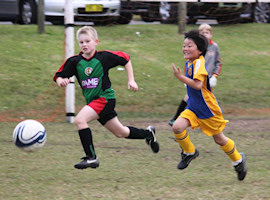
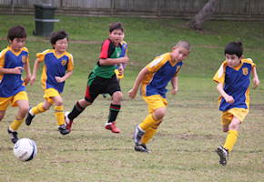
This is the first time I have viewed the team since the trial games. I am amazed
at their improvement and how well they play as a team.
This week we were playing Glenhaven. Jack had a great game in the first half in
the forwards, his passing game was very good, and he managed to get past the
opposing defence a number of times. Hugh was also threatening up front, and was
unlucky not to score a goal. Austin played a full game in the centre of defence
and was solid throughout the whole match. James, and Andrew,were also good in
defence. Michael was again a key player in midfielder, and he is always tirelessly
running back to help in defence and come forward in attack. Thomas and Kan also
played very well in midfield. Nathaniel, Joe and Liam played a number of positions
throughout the match and were very impressive in these different positions.
Overall, it was a very even match, however Glenhaven scored two soft goals when
we failed to clear the ball from the penalty area. The third goal was from a
generous penalty kick awarded to Glenhaven. The final score was 3-0.
Nearly half of the team are playing this year for the first time. So it has been
great how the more experienced players have welcomed and encouraged the new boys.
We have are only halfway through the season, so I can see that the improving
teamwork will result in more success in the second half of the season.
All the boys seem to be having a great time which is the most important thing...
GO NORTH RYDE!
- Tomoko Barnier
|
|
|
|
U11 Division 1
8 - 1
|
|
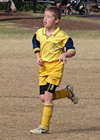
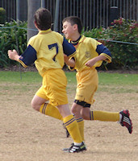
Today we played against Eastwood St Andrews away from home. It was a nice day to
play, and Eastwood's home ground was good to play on. We were one player short,
Dion, who was off sick. David was made captain for the match and even though we
lost the toss, we were still able to kick off first.
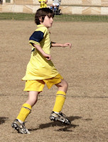
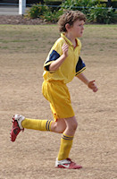
Eastwood were all over us in the first few minutes of the game. Most of the time
we were trying to clear the ball from our defence, but once North Ryde settled
into the game we scored the first goal when Sam's shot at goal deflected off a
defender and went into the goals and gave us a 1-0 lead.
We had a few more opportunities that just tipped over the top of the goals. Soon
afterwards Eli had a chance to score. He struck the ball at the keeper, but the
keeper fumbled it and Shannon put the rebound into the goal. That made it 2-0.
Later in the half the ball was up front again and Sam smashed a back-pass into
the back of the nets making the score 3-0. The Eastwood goal keeper wasn't having
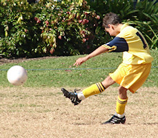
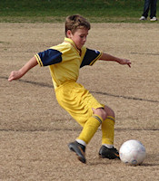
a good day because shortly afterwards Lennon dribbled all the way from halfway
and took a shot they ran right through the keeper's legs, 'Nutties' you may say,
and the score went to 4-0. The next goal was scored by Oscar P who smashed a
volley out of the air right into the back of the net and made the 5-0 before
the half time whistle blew.
In the second half Eastwood were still giving their best to have a chance in the
game, but North Ryde retained their strength. Shortly after the whistle blew,
Shannon scored a spectacular goal and took the score to 6-0. A little while later
the ball deflected off a player towards Lachlan who took a long range shot and
scored, making it 7-0. Eastwood came back after that when their number 7 dribbled
past our defence and just managed to put the ball past Eli's hands. Tim and Eli
had shared the goal keeping and had made some spectacular saves. The score was
7-1.
Near the end of the game David sent a through ball to Jack who dribbled well
passed the goalie and scored in a wide open goal. The final whistle blew and the
score ended at 8-1. It turned out to be a better result than our last performance
against Eastwood St Andrews which ended with a score of 4-1. Well done to the
whole team, all the goal scorers, and the rest of the team for setting them up.
Great work!
- David Howard (Player)
|
|
|
|
U11 Division 3
6 - 2
|
|
What a great win although it didn’t look so good at the start. Ravens made it
look easy charging up through the middle of the field and our defence seemed
to have few answers. Within ten minutes Ravens had scored a goal. This shocked
the North Ryde boys, who had won easily earlier in the season. Zac went on a
mission and soon scored an equaliser. The game got scrappy. Again North Ryde
often waited for the ball instead of going to it. Robert had a shot and Massie
was unlucky to not score. Right on half-time we got a free kick from about 15
metres out. Hamish kicked for goal, the keeper got to it, but couldn’t hold on
and Zac was in the right place to score.
In the second half we seemed a lot more positive. Adrian found himself unmarked
when the ball came to him. He booted it towards the net and scored a great goal;
his first for the season. Almost from the re-start North Ryde got the ball back
and, after some good runs by a number of players, Massie threaded it past the
goal keeper for our fourth goal. This was like a signal for a rest. The team
took it easy and it took just one good run down the sideline for Ravens to get
a goal back. Could we still lose from here? Zac had made some good runs, but
failed with the last kick. Now, with a tiring Ravens defence, he finally got
past the keeper for his third of the day. Shortly after, we got a corner. The
Ravens defenders became confused and scored an own goal. Mention should be made
of the good goal keeping of both Ben and Anthony and the defending by Thomas
and Adam.
- Martin Borri
|
|
|
|
U15 Division 2
2 - 4
|
|
For the sixth game of the year, with a very sunny day and an 11:00am start, the
boys played at Redfield College against Redfield Lions FC, who were first in the
GHFA competition.
Well this was like our grand final, we would not have a harder game than this one!
The field was small, slopping down to one Goal, with longish grass had a tail
wind with the slope. There was no ref so Paul would ref the first half. We started
strongly and it was an even contest. Some confusion in our goals as Manav left
the ball for Lewis, who tried desperately to get the ball by spread eagling
himself on the field, to no avail as it slipped out of his fingers and was tapped
into the goals. 0-1. Soon, we reversed our fortunes and Hayden made a good pass
to Daniel who able kicked it in: 1-1. A free kick to Redfield saw an excellent
shoot at goal which was more than able met by Lewis who got a hand to the ball
to edge it out. The Parents cheered! That was end of the first half and we would
have to run into the wind and up the field for the second half. The Redfield coach
would ref the second half. There where many exceptional plays, such as:
-
Harry tenacious attack for the ball in the rhs corner and eventually getting
the ball to deliver a cross to Manav who just kicked the ball wide of the goal.
-
Chris strong run from his goal to almost the other goal, dancing around all
the other players on his way.
-
Tom, always committed, strong left side runs up to the lhs of the goal box
and kicks into the goal box.
-
Nat strong defence with passes up to Cameron and Kylie.
Alas, Chris sliding tackle which cleared the ball away but took out the striker,
which gave Redfield another free kick. With the wind behind and the downward
sloping field, I had the feeling that the Striker had practice this kick before.
The kick was lobbed in just under the bar much to Lewis disappointment. 1-2.
The game went into a frenzy, at least for the parents, which accumulated in a
push with Nat on his face and another goal to Redfield. 1-3. Paul, gave a stern
look to all around him! Suddenly the even contest was looking grave for North
Ryde. However, the boys were not having any of that and Tom soon kicked a goal.
2-3. The pressure was on, with only a few minutes left, the whole North Ryde
Team went into attack mode with all our players deep into the Redfield half.
An excellent throw-in by Cameron back to Hayden who was near the half, Hayden
took aim and just went wide of the goals! Then a final lobe by Redfield and a
sprint by Hayden and a Redfield striker to the North Ryde goal resulted in
another goal 2-4...
Paul and I are very proud of the boys and the Redfield coach came over to
congratulate Paul on how well they played! Hopefully we will play Redfield
again, in the finals!
The player of the match was Nat and the ‘cupcake’ trophy was presented by
Jillian Rolls. I would like to thank all the parents who came to support our
team... you do make a loud difference!
- Joe Rosenfels
|
|
|
|
All Age Division 17
1 - 1
|
|
Round 8 saw the start of the second half of the season with North Ryde up against
West Pennant Hills Cherrybrook, a team who had the better of them in the first
round until an injury stopped the game with the score 2-0. North Ryde were
confident they could make a good showing against them in this round though.
Unlike last week North Ryde started strongly winning early the exchanges mounting
sustained pressure on the West Pennant Hills Cherrybrook (WPHC) defence. With the
midfield bossing the game and linking well with the two strikers the only thing
that was lacking was a clear chance to make the scoreboard reflect this early
dominance. Mid-way through the half however in what seemed like an innocuous
challenge, a WPHC player was sent off for striking. There did not appear to be
much in it really but the referee said he thought he saw the player strike out
and promptly sent him off reducing WPHC to 10 men. When the game resumed though,
WPHC seemed inspired by this perceived injustice and began to win possession and
take the game to North Ryde creating one golden chance which was put over the bar.
Despite this, the teams ended the half at 0-0 and it was still anyones game.
The second half started like the first ended with WPHC showing more intent and
energy to win and work the ball and for a period North's lost their shape and
looked like they would not be able to make the most of the extra man advantage.
After some more sustained pressure WPHC took the lead with a break that saw their
striker skip through a defensive challenge and put a shot low into the corner of
the net. North Ryde were shocked into life but their energy still was not
resulting in possession of pressure in the WPHC half. WIth the game slipping away
however North's lifted again and pushed harder up the pitch with several corners
seeing opportunities to get back in the game. With time running down this momentum
change was causing WPHC several headaches and after some good interchanges the
opportunity came.. and was promptly taken with a nice header beating the keeper
to get the scores back to 1-1.
The last few minutes saw both teams looking for the winner but despite their
efforts the game ended 1-1, possibly a fair reflection on the effort expended but
it was WPHC who will be left thinking that they let 2 points slip here.
So North Ryde continue to look for that first win. They are playing well enough
at times to get it but not for the full 90 minutes and so that will be an area
they must address to push up the ladder in the remaining rounds.
- Simon
|
|